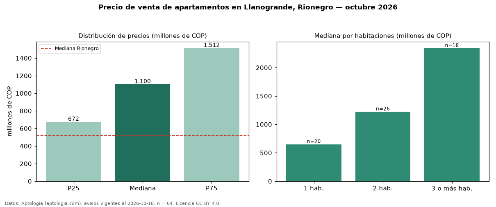

Precio de venta de apartamentos en Llanogrande, Rionegro — octubre 2026
Con 64 avisos vigentes, el precio mediano de apartamentos en venta en Llanogrande, Rionegro es COP 1,10 mil millones. Eso es 112 % por encima de la mediana de Rionegro para apartamentos (COP 520 millones). Por metro cuadrado, la mediana es COP 11,11 millones/m² (n = 58 avisos con área), 49 % por encima de Rionegro (COP 7,44 millones/m²). Por precio mediano es el puesto 2 de 18 barrios de Rionegro con al menos 30 avisos de apartamentos en venta (COP): entre las más caras. Con el precio por m² de arriendo del mismo segmento (COP 70.482/m² al mes), la rentabilidad bruta implícita es 7,6 % anual (aproximación con medianas de ofertas distintas). El área mediana anunciada es 97 m². El segmento con más oferta es el de 2 habitaciones (26 avisos, mediana COP 1,23 mil millones); pasar de 1 habitación a 3 o más habitaciones cambia la mediana +260 %. La administración mediana declarada es COP 837.500 al mes (n = 34). Datos: Aptología (aptologia.com), CC BY 4.0 — https://www.aptologia.com/venta/rionegro/llanogrande. Archivos: PDF, CSV con las cifras y gráfica PNG.

| Avisos únicos | 64 |
|---|---|
| Percentil 25 | COP 672.500.000 |
| Mediana | COP 1.100.000.000 |
| Percentil 75 | COP 1.512.500.000 |
| Mediana por m² | COP 11.109.484 |
Fuente: avisos vigentes de portales inmobiliarios recopilados por Aptología, deduplicados (mínimo 30 avisos únicos por celda). Precios pedidos, no cerrados. Fecha: 2026-10-18.